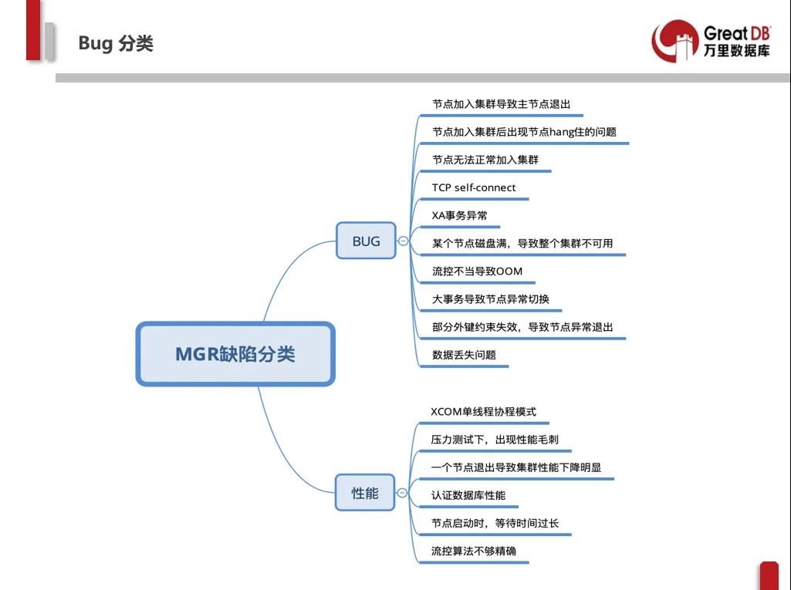

GreatSQL，打造更好的MGR生态
在3月20日「3306π」社区成都站的技术分享会上，万里数据库CTO娄帅做了题为《MGR Bug修复之路》的技术分享。
娄帅指出，由于MGR自身的复杂性，导致复现Bug场景十分困难，MySQL官方针对MGR的Bug修复工作通常比较缓慢，堆积较多，由此造成社区用户对MGR官方版本使用信心不足，担心遇到各种不可控的Bug，甚至较严重的线程、事务hang住等问题，感觉不太可靠。
因此，万里数据库核心研发团队深入研究MGR架构，并在不断的Bug修复实践中总结出了一套完善、流畅的Bug修复流程，将MGR的缺陷分为Bug和性能两类，整理出共16种Bug及性能缺陷问题。
MGR Bug缺陷分类

近期，万里数据库研发团队经过一段时间的精心准备，对Bug修复的代码进行review后，正式发布第一个稳定版本——GreatSQL 8.0.22-13，这是基于Percona Server 8.0.22-13源码编译而来。之所以选择Percona分支版本，是因为它已经在官方版本的基础上进行了功能补充以及性能提升等优化工作，也算是"站在巨人肩膀上"吧。
本次放出的版本，主要有以下方面的改进和提升：
稳定性提升
01
提升大事务稳定性
优化MGR队列garbage collect机制、改进流控算法，减少每次发送数据量，避免性能抖动
解决了AFTER模式下存在节点加入集群时容易出错的问题
在AFTER模式下，强一致性采用多数派原则，以适应网络分区的场景
当MGR节点崩溃时，能更快发现节点异常，有效减少切主和异常节点的等待时间
优化MGR DEBUG日志输出格式
Bug修复
02
修复节点异常时导致MGR大范围性能抖动问题
修复传输大数据可能导致逻辑判断死循环问题
修复启动过程中低效等待问题
修复磁盘满导致吞吐量异常问题
修复多写模式下可能丢数据的问题/单主模式下切主丢数据的问题
修复TCP self-connect问题
随着代码review工作的推进，我们将继续保持版本更新，不断放出新版本，以飨各位社区朋友。同时，我们也十分欢迎大家一起参与试用体验，并把遇到的问题在gitee上提交issue（提交地址：https://gitee.com/GreatSQL/GreatSQL/issues ），技术团队将会第一时间进行反馈回复。再次感谢大家对GreatSQL的支持，让我们一起打造更好的MySQL社区生态。
两个关键且重要的事来了，别眨眼~
01
GreatSQL下载地址
GreatSQL二进制包已发布到gitee.com平台上，下载地址：https://gitee.com/GreatSQL/GreatSQL/releases/v20210401。下载的同时，别忘了顺便加个星(star)哦，感谢~
02
GreatSQL测评有礼活动
自发稿之日起，只要向我们提交GreatSQL使用报告/测评报告/Bug报告中的任一方式，前5位即可获得活动专属惊喜福利。
不知哪些小伙伴能抢先拿到呢，让我们拭目以待~
扫码下方二维码，
工作人员邀您进入GreatSQL技术交流群~
扫码添加工作人员
推荐阅读1.活动 | 技术共享 社区共赢——解锁MGR Bug的16种修复神操作
2. 专访 | 3306π社区专访CTO娄帅，畅谈万里数据库的MGR Bug修复之路
3. 2021央采榜单花落谁家？万里安全数据库乘风而上 实力入围